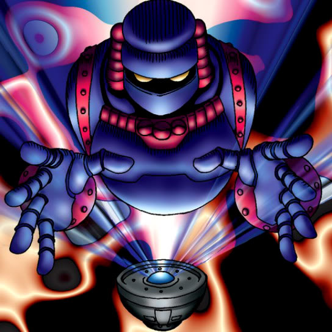

Disk Magician

STATS
ATK: 1350
DEF: 1000DECK COST
Deck Cost per Card: 24Fusion List (7 Possible Fusions)
- Disk Magician + Little Chimera = Dice Armadillo
- Disk Magician + Mystical Sheep #1 = Dice Armadillo
- Disk Magician + Obese Marmot of Nefariousness = Dice Armadillo
- Disk Magician + Oscillo Hero = Cyber Soldier
- Disk Magician + Queen's Double = Cyber Soldier
- Disk Magician + Wicked Dragon with the Ersatz Head = Metal Dragon
- Disk Magician + Yamatano Dragon Scroll = Metal Dragon